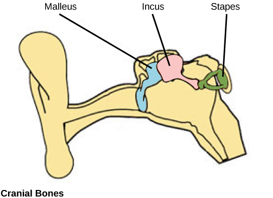

二、哺乳纲的分类
哺乳纲根据生殖方式、胎盘有无、乳头、大脑胼胝体、体温等特征，分为三个亚纲：原兽亚纲（单孔类）、后兽亚纲（有袋类）和真兽亚纲（有胎盘类）。三者代表了哺乳类演化的三个阶段，体现从"卵生无胎盘"到"假胎生"再到"真胎生"的进化趋势。

（一）原兽亚纲（单孔类）
原兽亚纲动物又称单孔类，起源于1.3亿多年前，是现存哺乳类中最原始的类群，具有一系列接近爬行类、不同于高等哺乳类的特征。
除哺乳纲共有特征外，单孔类还表现为：哺乳，身体被毛，但口缘无肉质唇而有角质鞘，无齿，产具壳的多黄卵（卵生）；吻部具电接受器官用于搜寻食物；雄兽不具阴茎；具乳腺但无乳头（乳汁渗出被幼崽舔食）；具泄殖腔。
单孔类仅3个种，其中2种是针鼹，另一种是鸭嘴兽：
- 针鼹：背毛中夹杂针刺，角质吻部管状，舌长有黏性取食蚂蚁、白蚁；腹部有皮肤囊孵卵，完全陆生，善掘土。
- 鸭嘴兽：喜水栖，居河岸；具宽而扁的"鸭嘴"，水中取食软体动物、昆虫幼虫和水生无脊椎动物；指（趾）间具蹼，无耳壳；幼仔吸食母兽腹部乳腺分泌的乳汁长大，四个月后独立生活。
（二）后兽亚纲（有袋类）
后兽亚纲又称有袋类。其特征为：胎生但无真正胎盘（为卵黄囊胎盘，假胎生），产出的发育不完全的胎儿必须在母体腹部育儿袋中吮吸母乳继续发育。有袋类有270多种，主要分布于澳洲及其岛屿，如袋鼠、袋熊。
（三）真兽亚纲（有胎盘类）
真兽亚纲又称有胎盘类。最早的真兽类出现于7000万年前白垩纪的蒙古地区，然后向地球各角落扩散；新生代各类真兽类雨后春笋般出现，许多较低等有袋类和单孔类随之被淘汰。现在真兽类有4000多种，被分为19个目，占哺乳类绝大多数。
三个亚纲的主要特征归纳如下表（表11-18-1）：
| 特征 | 原兽亚纲（单孔类） | 后兽亚纲（有袋类） | 真兽亚纲（有胎盘类） |
|---|---|---|---|
| 生殖方式 | 卵生 | 假胎生，但无真正胎盘 | 真正的胎生（尿囊胎盘） |
| 生殖孔类型 | 属泄殖腔孔 | 泄殖孔（又称尿殖孔） | 泄殖孔，灵长类雌性有独立的生殖孔 |
| 乳头 | 无 | 有 | 有 |
| 大脑半球 | 不发达，且无胼胝体 | 不发达，且无胼胝体 | 发达，有胼胝体 |
| 体温 | 26～35℃ | 33～35℃ | 37℃左右 |
| 分布 | 澳洲 | 主要在澳洲及其岛屿 | 全球 |
| 主要类群 | 鸭嘴兽、针鼹 | 袋鼠、袋熊 | 见下面13目介绍 |
真兽亚纲的主要目（13目）
真兽亚纲共19个目，课件重点介绍以下13个目。各目的鉴别特征（齿式、四肢特化、食性）是联赛识图与分类题的核心。
1. 食虫目——最原始的真兽类
为真兽亚纲最早出现和最原始的动物。保留有退化的泄殖腔，体温比其他胎盘动物低得多；个体一般较小，吻部细尖适于食虫；四肢多短小，指（趾）端具爪适于掘土；主要以昆虫及蠕虫为食；大多夜行性。代表：刺猬、鼹鼠。
2. 翼手目——唯一能飞的哺乳类
是哺乳动物中唯一能飞的动物。前肢特化，指骨特别延长；由指骨末端至肱骨、体侧、后肢及尾间着生薄而柔韧的翼膜借以飞翔；胸骨具龙骨突，锁骨发达。齿尖锐，多食虫，少以果实为主食。夜行性，具回声定位。代表：蝙蝠。
3. 灵长目——树栖、双眼前视
为树栖类群。眼和脑很大，两眼前视，视觉发达，嗅觉退化；手可抓握，拇指与其他四指相对，多数种类指（趾）甲代替爪；手掌（及跖部）裸露；雌性有月经。群栖，杂食性。代表科：
- 卷尾猴科（新大陆猴）：鼻间隔宽阔，鼻孔向两侧开口；拇指不能与他指相对；不具颊囊、不具臀胼胝。如白毛卷尾猴。
- 猴科（旧大陆猴）：鼻间隔狭窄，鼻孔向下；拇指能与它指相对；尾不具缠绕性；多具颊囊和臀胼胝。如猕猴、金丝猴。
- 长臂猿科：臂特长，站立时手可及地；无尾，具小臀胼胝，不具颊囊。如黑长臂猿。
- 猩猩科：体型较大，不具臀胼胝，前肢长可过膝；大脑发达、行为复杂，分类地位接近人类。如猩猩、黑猩猩、大猩猩。
- 人科：直立步行，臂不过膝，体毛退化，手足分工；大脑极为发达，有语言；具社会性和阶段性。
4. 鳞甲目——全身被鳞
全身被以鳞甲（表皮角质鳞），鳞片间杂有稀疏硬毛；吻尖舌发达，无齿；前爪极长，适于掘蚁穴、舔食蚁类等昆虫。代表：穿山甲。
5. 兔形目——重齿类
上颌有2对前后着生的门齿（称重齿类），无犬齿，门齿与前臼齿间有一宽的齿间隙（便于食草时泥土等杂物溢出）；上唇具唇裂；善跳跃。草食性。代表：草兔。
6. 啮齿目——种类最多的哺乳类
本目为哺乳类中种类及数量最多的一个类群（约占种数的1/3）。上、下颌各有一对门齿，终生持续生长，用于啮咬；无犬齿，门齿与臼齿间有很宽的齿间隙。代表：松鼠、家鼠、豪猪、跳鼠。
7. 食肉目——猛兽，具裂齿
猛兽类。门齿小，犬齿强大锐利；上颌最后一枚前臼齿和下颌第一枚臼齿的齿突如剪刀状相交，特化为裂齿（食肉齿）；四肢趾端具锐爪。常见科：
- 犬科：颜面部长而突出，后足常4趾，爪钝不能伸缩，趾行性；嗅觉特别发达。如犬、狼、豺、貉。
- 熊科：体粗壮笨重，头圆颜面长，尾短；具5指（趾），爪大不能伸缩，跖行性；裂齿不发达，杂食。如黑熊。
- 猫科：头圆吻短，后足4趾，爪长锋利可伸缩，善攀缘跳跃伏击；裂齿及犬牙均发达，肉食性凶猛。如狮、虎、豹、猞猁。
- 鼬科：如黄鼬（黄鼠狼）、獾、水獭。
- 大熊猫科：以竹叶为主食，是食肉目中的素食种类。
8. 鲸目——水栖，最大哺乳动物
水栖。前肢鳍状，无后肢，具背鳍和水平的叉状尾鳍；有些种类有牙、其他用腭上的鲸须过滤浮游生物；体毛退化（仅胎儿头部具毛），皮脂腺消失，皮下脂肪增厚；肺具弹性，体内有贮氧结构，15～60min呼吸一次。代表：白鳍豚、海豚、蓝鲸（为哺乳动物中体型最大者）。
9. 鳍脚目——海产鳍状四肢
海产兽类。四肢均为鳍状、趾间具蹼。代表：海豹。
现代分类备注：
- 鲸目：分子系统学证据表明鲸类与偶蹄类亲缘关系最近，现代分类常将二者合并为鲸偶蹄目（Cetartiodactyla），或把鲸目降为偶蹄目下的一个亚目。
- 鳍脚目：海豹、海狮、海象等鳍脚类传统上单列一目，现代研究多认为其与食肉目亲缘密切，常归入食肉目鳍脚亚目或视为食肉目的近缘独立支。
10. 长鼻目——象牙与象鼻
上颌一对门齿成为象牙；鼻子和上唇伸长形成象鼻，有取食作用；体毛退化。植食性。为陆生哺乳动物中体型最大的动物。代表：亚洲象。
11. 偶蹄目——第三、四趾发达
第三、四趾尤为发达、有蹄，其余各趾退化。代表：野猪、梅花鹿、牦牛、黄牛、水牛、山羊、骆驼、河马。
12. 奇蹄目——第三趾发达
草原奔跑兽类。第三趾尤为发达、有蹄，其余各趾退化或消失，趾（指）端具蹄。代表：野马、非洲犀牛、马、野驴。
13. 海牛目——海洋有蹄类
适于海洋生活的有蹄动物。代表：儒艮（俗称"美人鱼"）。
| 目 | 标志特征 | 代表动物 |
|---|---|---|
| 食虫目 | 最原始真兽，保留退化泄殖腔，吻细尖 | 刺猬、鼹鼠 |
| 翼手目 | 唯一能飞，指骨延长+翼膜+龙骨突 | 蝙蝠 |
| 灵长目 | 双眼前视，拇指相对，指（趾）甲，有月经 | 猕猴、金丝猴、猩猩、人 |
| 鳞甲目 | 全身角质鳞甲，无齿，前爪长 | 穿山甲 |
| 兔形目 | 重齿类，上颌2对门齿，无犬齿，唇裂 | 草兔 |
| 啮齿目 | 种类最多（1/3），门齿终生生长，无犬齿 | 松鼠、家鼠、豪猪 |
| 食肉目 | 裂齿（上最后前臼+下第一臼），犬齿强 | 狼、虎、熊、水獭、大熊猫 |
| 鲸目 | 水栖，鳍状前肢无后肢，水平叉状尾鳍 | 蓝鲸、海豚、白鳍豚 |
| 鳍脚目 | 海产，四肢鳍状趾间具蹼 | 海豹 |
| 长鼻目 | 象牙（上门齿），象鼻，陆生最大 | 亚洲象 |
| 偶蹄目 | 第三、四趾发达有蹄（偶数趾） | 牛、羊、鹿、骆驼、猪、河马 |
| 奇蹄目 | 第三趾发达有蹄（奇数趾） | 马、犀牛、野驴 |
| 海牛目 | 海洋有蹄类 | 儒艮 |
三、哺乳动物的迁徙与冬眠
（一）迁徙
由于地理环境限制，哺乳类迁徙较为困难，故迁徙种类不多。著名例子：
- 驯鹿群迁徙：往返于相距800多千米的北美洲与北冰洋沿海之间。4月下旬→7月底，北美洲 ⇄ 北冰洋沿海（水草丰美、产仔）。
- 海豹迁徙：2月早春，北美洲西南沿海 ⇄ 普里比洛夫群岛（产仔后并与雄性交配）。
此外，蝙蝠与鲸也有迁徙习性。
（二）冬眠
哺乳类的冬眠与变温动物的蛰眠不同，分两类：
- 真正的冬眠：如单孔类、有袋类、食虫类、蝙蝠类、鼠类及灵长类的个别种类。冬季体温可降低到接近环境温度（几乎0℃），机体呈麻痹状态；当环境温度进一步降低或升高到一定温度时，体温可迅速上升到正常水平。
- 半冬眠型：如熊类、黄鼠狼等。寒冷季节机体全身呈麻痹状态，但体温不降低或仅降低少许，易觉醒。
★ 哺乳纲分类总结（必背）
三亚纲：原兽亚纲（单孔类，卵生、无乳头、泄殖腔、无胼胝体，鸭嘴兽/针鼹）→ 后兽亚纲（有袋类，假胎生、育儿袋、有乳头、无胼胝体，袋鼠/袋熊）→ 真兽亚纲（有胎盘类，真胎生、有胼胝体、37℃，4000+种、19目）。
13目速记：食虫（最原始）·翼手（唯一能飞）·灵长（前视有月经）·鳞甲（穿山甲）·兔形（重齿）·啮齿（最多、门齿终生长）·食肉（裂齿）·鲸（最大、水平尾鳍）·鳍脚（海豹）·长鼻（象牙象鼻）·偶蹄（3、4趾）·奇蹄（3趾）·海牛（儒艮）。
迁徙：驯鹿、海豹；冬眠：真正冬眠（体温骤降）vs 半冬眠（体温不降，如熊）。